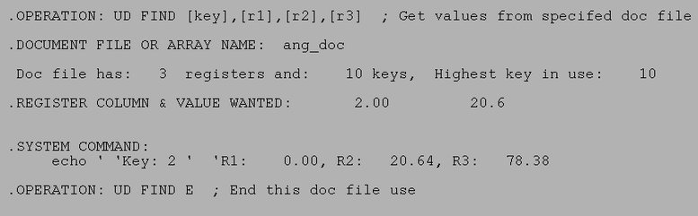

| .OPERATION: | UD FIND [key],[r1],[r2],[r3] | ; Get values from specifed doc file line |
| .DOCUMENT FILE: | sav_ang_doc | ; Doc file (input) |
| . | ||
| .OPERATION: | SYS | ; Echo angles |
| .SYSTEM COMMAND: | echo ' 'Key: 2 ' 'R1: {%f7.2%[r1]}, R2: {%f7.2%[r2]}, R3: {%f7.2%[r3]} | |
| . | ||
| .OPERATION: | UD FIND E | ; End this doc file use |
| .DOCUMENT FILE: | sav_ang_doc | ; Doc file (input) |
| INPUT DOC FILE |
|---|
|
| sav_ang_doc |
| RESULTS FILE |
|---|
|  |
| udfind_resu |